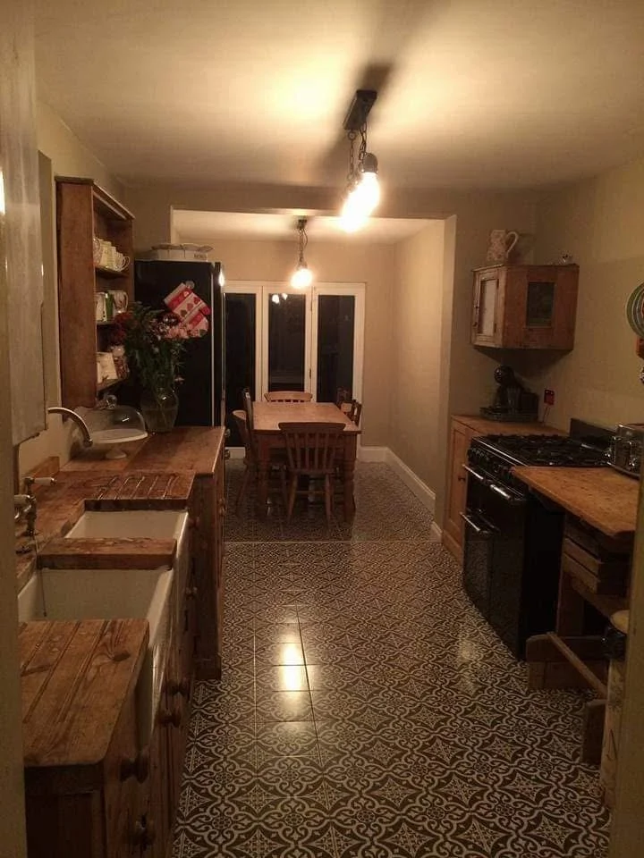

Bathrooms & tiling
Bathroom updates, shower rooms and tiling in Worthing. Discuss your project with Goring All Trades on 07752 594197.
Explore this service →
WORTHING · HOME IMPROVEMENTS
Kitchen improvement and finishing enquiries in Worthing. Explore supplied project photographs and contact Goring All Trades.
GORING ALL TRADES · WORTHING
Refresh a space that works hard every day. Discuss your kitchen improvement ideas, from practical changes to flooring and the finishing details that bring the room together.
Share photographs, approximate measurements and what you would like to keep or change. We will discuss the scope and the work needed before arrangements are made.
Discuss your project →WORTHING & SURROUNDING AREAS
Goring All Trades is based at 132 Limbrick Lane, Worthing. Send your postcode with your enquiry to confirm availability for your home and discuss the next step.
Discuss your location →LET’S TALK ABOUT YOUR HOME
Tell us what you are planning, your location and the timing you have in mind. Photographs and approximate measurements help us understand the work.
You can add photographs to your WhatsApp enquiry before sending.
HOW WE CAN HELP
Explore the service you need, then tell us about your project.
Bathroom updates, shower rooms and tiling in Worthing. Discuss your project with Goring All Trades on 07752 594197.
Explore this service →Kitchen improvement and finishing enquiries in Worthing. Explore supplied project photographs and contact Goring All Trades.
Explore this service →Interior painting, decorating and finishing enquiries in Worthing. Goring All Trades: established 2016. Call 07752 594197.
Explore this service →Timber floor restoration and flooring improvement enquiries in Worthing. View Goring All Trades project photos and discuss your home.
Explore this service →Timber fencing, trellis and decking enquiries in Worthing. Contact Goring All Trades to discuss your outdoor project.
Explore this service →Patios, paved paths and garden paving enquiries in Worthing. Explore Goring All Trades work and call 07752 594197.
Explore this service →